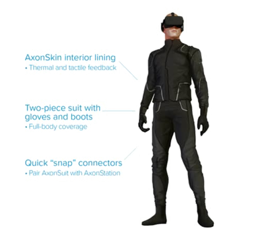

인공지능
인공지능 기술이 발전하게 된다면 무슨 변화가 일어날까? 인공지능을 바라보는 관점은 크게 두 가지로 갈립니다. 인간에게 부정적일 것이다 와 긍정적일 것이다. 본인은 인공지능 기술의 발전이 인간에게 가져 다 줄 편리함과 장점이 더 많을 것이라는 생각과 함께 인공지능 기술의 발전을 지지한다. IT트렌드 중에서도 가장 앞서 나가고 있는 분야가 인공지능 분야입니다. 그렇다면 과연 인공지능은 무엇을 기반으로 어떻게 발전하는 것인가? 우선 인공지능이란 컴퓨터가 인간의 지능적인 행동을 따라 하며, 학습하고 생각해 스스로 판단 할 수 있도록 만드는 기술이라 부릅니다. 인공지능 기술은 현재 IBM 의료 기술 로봇 왓슨과 같이 의료분야, 컴플라이언스라는 금융it분야의 인공지능 다양한 분야를 아우르며 인간에게 편리함을 가져다 주고 있습니다. 이후 인공지능이 더욱 발전한다면 어떤 사회가 될 지 벌써부터 기대가 됩니다.
가상현실
가상현실은 컴퓨터 등을 사용한 인공적인 기술로 만들어낸 실제와 유사하지만 실제가 아닌 어떤 특정한 환경이나 상황 혹은 그 기술 자체를 의미한다. 이때, 만들어진 가상의(상상의) 환경이나 상황 등은 사용자의 오감을 자극하며 실제와 유사한 공간적, 시간적 체험을 하게 함으로써 현실과 상상의 경계를 자유롭게 드나들게 한다. 가상현실의 핵심기술은 시각,청각,촉감과 같이 인간의 감각을 이용한 사용자 인터페이스 기술인 '표현기술', 가상공간 내에서의 조작방법 혹은 증강현실에서 실제 공간 또는 객체의 조작을 위해 필요한 핵심기술인 '상호작용기술', 가상현실에서 가상공간을 표현하며, 이를통해 가상현실 제작자의 의도,생각,정책 등을 반영하여 가상공간 또는 정보를 효율적으로 만들 수 있는 '저작기술', 그리고 증강현실에서 가상의 정보를 현실 공간에 정확히 표현하기 위해서, 관심 객체를 인지하고, 사용자의 시점을 정확히 계산하기 위해 필요한 '객체인식 및 트래킹기술'등이 있다.